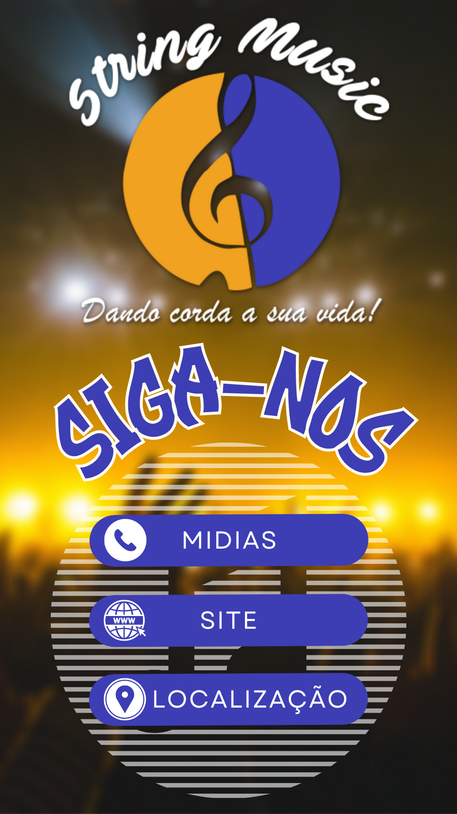

FLYER DA EMPRESA
CARTÃO INTERATIVO

*Não está funcionando porque é só o png*
NOSSA HISTÓRIA
Começamos nossa trajetória em 2019 fundando nossa
1ª loja, ainda na garagem de casa e só começamos a
expandir, depois de quase 1 ano de muito trabalho duro
e clientes satisfeitos conseguimos expandir para a loja
fisíca que temos atualmente; Ainda contamos com parceiros
fíeis que nos ajudam sempre.